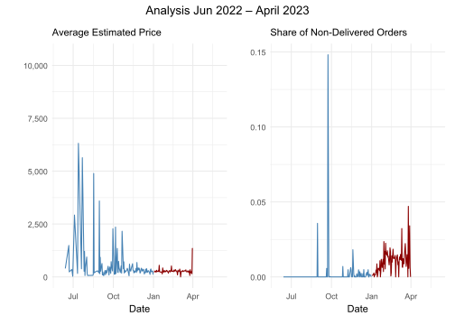
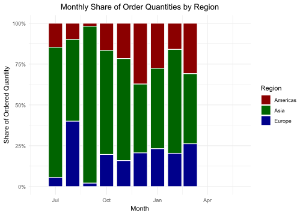
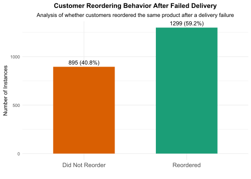

| Product Number | Total Ordered Quantity | Participation Quantity | Total Ordered Amount | Participation Amount |
|---|---|---|---|---|
| 3016012 | 63500 | 17.93 | 38954.43 | 0.08 |
| 5482401 | 22972 | 6.49 | 1390084.84 | 2.86 |
| 97403 | 18621 | 5.26 | 1719265.18 | 3.54 |
| 5100500 | 13700 | 3.87 | 15973.39 | 0.03 |
| 505018 | 9733 | 2.75 | 720309.35 | 1.48 |
| 6598405 | 8446 | 2.38 | 897852.30 | 1.85 |
| 8720790 | 7981 | 2.25 | 732083.84 | 1.51 |
| 8223018 | 7202 | 2.03 | 253527.58 | 0.52 |
| 14407 | 7032 | 1.99 | 1157772.18 | 2.38 |
| 5482013 | 7000 | 1.98 | 6338.44 | 0.01 |
ZLG ING - Business Analysis
Data Analyst Test
This report examines ZLG.inc’s order data to assess challenges related to unfulfilled orders and evaluate the CEO’s claim about reorder behavior. We highlight key product demand trends, client-level impacts, and financial losses due to inventory shortages.
We also analyze ordering patterns from January to March 2023—right after the POS system change—and test whether clients reordered the same products within 60 days at equal or higher quantities.
Our aim is to offer a data-backed recommendation on the value of investing in improved warehouse management.
Any comments or questions? Feel free to reach out:
Objective I
10 most popular products
Which products lead the pack in customer demand? The table shows the top 10 products by total ordered quantity, displaying each product’s volume contribution percentage, revenue generation, and financial impact percentage across the portfolio.
Conclusions:
Product
3016012dominates volume with 63,500 units (17.93% of orders) but contributes minimally to revenue (0.08%).Product
97403ranks third in quantity but generates the highest revenue ($1.7M), indicating it’s a high-value item with strong demand.Volume doesn’t equal profit - the top revenue contributors (products
97403and5482401) aren’t the highest-volume sellers.
3 clients with the most unfulfilled orders
Unfulfilled orders can signal bottlenecks. The next table identifies the three clients with the highest number of unfulfilled orders, showing both the quantity of non-delivered orders and the financial impact of these missed opportunities.
Conclusions:
Client
79016870represents the greatest financial loss ($27,592.57) despite having fewer unfulfilled orders than the top client, suggesting these are higher-value transactions that should be prioritized.While these three clients account for 208 unfulfilled orders worth $65,770.72, they represent only about 9.5% of the total 2,194 unfulfilled orders, indicating that addressing their issues would solve only a small portion of the overall fulfillment problem.
| Costumer Number | Total Non-Delivered Orders | Total Amount Lost |
|---|---|---|
| 74843000 | 80 | 15313.27 |
| 79016870 | 73 | 27592.57 |
| 2375900 | 55 | 22864.88 |
| Total | 65770.72 |
What happened during the first quarter of 2023?
The visual analysis below breaks down trends in order volume, lost revenue, and delivery issues from June 2022 to June 2023—with a focus on patterns emerging between January and March 2023. Use the tabs to explore each dimension.
Conclusions:
Order quantities reached their peak in January 2023 before steadily declining through March.
Loss amounts were consistently high throughout Q1 2023, with multiple extreme spikes indicating systematic fulfillment issues.
Average order values declined notably during Q1 2023, suggesting a shift toward lower-priced items.
The share of non-delivered orders increased dramatically in late Q1 2023, reaching the highest levels of the entire analysis period.
Asia consistently dominates monthly order shares, while Europe and the Americas trade places as distant seconds—highlighting Asia’s key role in demand.


Objective II
How do customers respond after a delivery failure?
The plot below shows whether customers reordered the same product within 60 days following an unsuccessful delivery.
Conclusions:
A majority of customers reordered the product after a failed delivery, suggesting that delivery issues do not entirely deter customers from trying again. This could indicate:
Strong product demand or loyalty.
Customers may attribute the failure to external factors rather than the product or seller.

How do reordering and non-reordering customers differ?
What is the cost of losing a customer? These visuals highlight the differences in average lost revenue and failed quantities between return customers and those who never came back.
Conclusions:
Customers with larger failed quantities are more likely to reorder, perhaps because the stakes are higher for them.
Meanwhile, a higher financial loss correlates with a greater chance that a customer will not return — highlighting the importance of minimizing and recovering from large financial impacts in delivery failures.
How long are taking to reorder?
The following plot shows how long it takes customers to reorder after a failed delivery.
Conclusions:
Most customers reorder between 15 and 30 days after a failure.
There’s a significant delay before they return — few reorder immediately.
The peak reorder time is around 20–25 days, meaning it takes 3+ weeks on average for the business to recover the revenue from a failed order.
What should be the decision?
Upgrading the warehouse system will not only reduce order failures but also accelerate reorders and enhance customer loyalty. It’s an investment in both customer retention and financial stability.